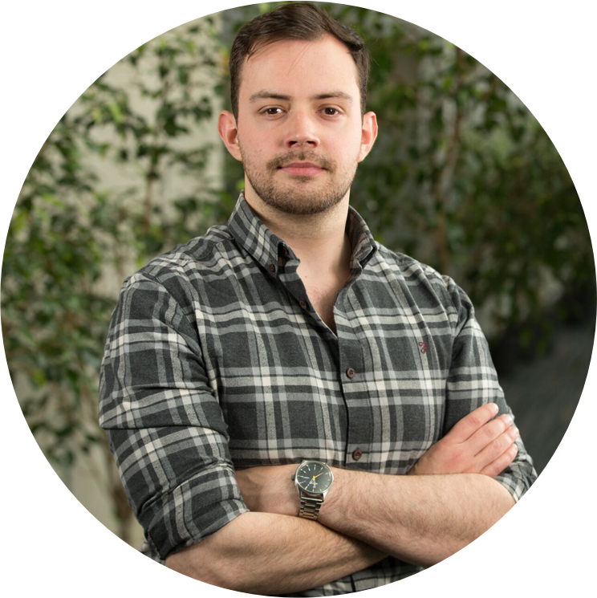

 I graduated with a First Class (Honours) B.Sc. in Applied Computing from the University of Dundee in 2012.
After taking a short break from academia to travel around Australia, I returned to Dundee in 2014 to begin my PhD in Computer Science (HCI) supervised by Dr David Flatla. My PhD research focused on working with people with hearing loss to develop technology to enhance their acquisition of speechreading (commonly called lipreading). I successfully defended my thesis in December 2017 and then held a Sessional Lecturer position at Dundee until the summer of 2018.
Since November 2018, I have been appointed as a Lecturer in Computer Science at Bournemouth University on the South-East coast of England. In my role at Bournemouth, I am continuing to research aspects of Accessibility within HCI.
If you are interested in working together on a project, let's have a chat.
Office Location:P325 Poole House, Talbot Campus,
Bournemouth University,Fern Barrow, Poole, England,BH12 5BB(+44) 01202 965732
I have two brothers who are equally talented, Dave who is an artist & 3D animator/modeler and Edd who is a professional Games Programmer and also develops awesome indie games.
Keep an eye on my Instagram to follow my surfing and travelling antics.